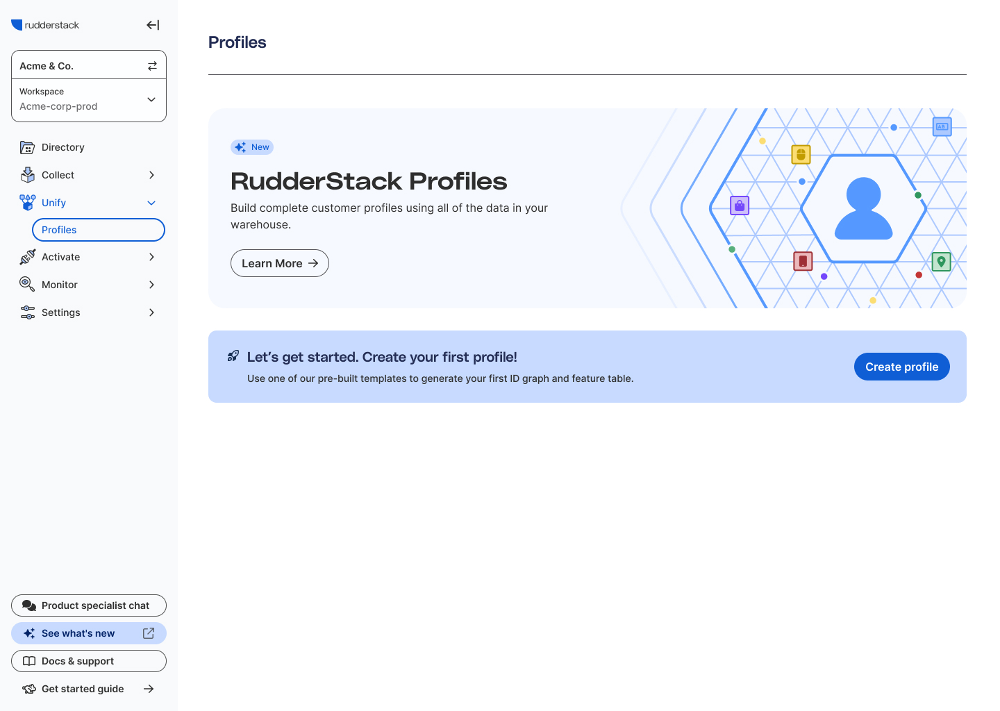

RudderStack
Configuring complex data sourcing
Idea in Brief
🔐 Overview
In the realm of data-driven decision-making, achieving a complete 360-degree view of your customer is a coveted prize. It promises a better customer experience, higher satisfaction, and ultimately, increased revenue. However, building this comprehensive customer profile is no walk in the park. It's often a time-consuming and costly endeavor, characterized by complex data wrangling and reliance on limited SaaS tools. The reward for getting it right, though, is significant.
🔍 The Challenge
At the heart of this project was the exciting challenge of creating customer profiles that could drive smart decision-making. It involved crafting these profiles, connecting them to our data warehouse, and integrating them into the customer's daily work. Our goal was to make profile creation effortless, demonstrate their value in various scenarios, and ensure they seamlessly fit into the customer's workflow, unlocking the full potential of these profiles.
🤦 Customer Problem
Organizations strive for precise, integrated customer profiles, fostering data-driven decisions, better experiences, and revenue growth. They need a tool for simplified profile creation, warehouse integration, and cross-functional use. The objective: empower data teams for efficiency and strategic value.
🧭 Design's approach
This endeavor has been a pivotal undertaking for the company. This initial launch of Profiles serves as the foundational 0 to 1 MVP solution. While it didn't carry the existential weight of where Profiles is now, it served as a crucial piece of evidence to validate customer interest and usability. The design strategy focused on addressing immediate needs and establishing the functional groundwork for the project's future potential.
Our goal was to move quickly and solve the problems at hand while leaving it open for variations in the future.
🏆 The Results
The biggest success we had was from our customer Wyze, a company that specializes in smart home products and wireless cameras. They were facing a challenge with their customer journey spread across different platforms, making data consolidation a hassle and limiting their ability to personalize experiences. But when they started using RudderStack Profiles, everything changed for the better.
They standardized data and user identification across all platforms, giving them full visibility into their customers' journey. And the best part? They saw results in just weeks. Their marketing team shipped three times as many campaigns, driving incremental revenue. And their data engineering team became 5-10 times more productive.
With Profiles, Wyze resolved customer identities, used first-party data for personalized recommendations, and unlocked revenue growth. It's clear that Wyze has found real value in this solution.
“With Profiles, we are now able to resolve customer identities using our first-party data, compute machine learning user features, and deliver personalized recommendations to drive revenue.”
— Wei Zhou, Director of Data Engineering at Wyze.
Project worflow
In order to get the value of Profiles, customers need to be able to create a profile. This workflow was fairly simple, name the profile, connect a warehouse, configure this new profile, set some advanced settings, and review the final profile.

Each destination had over 10 pages in the spread sheet and this sheet had more than 70 rows. So I thought I'd save you and just screenshot a small piece of it.
Start Page
This was our first attempt at creating a 'Marketing' page within the product. Our main goal was to get people excited, show off the best features, and ultimately get more people to use these features instead of leaving things blank. We wanted to make it clear that our product is awesome and worth using. So, we put a lot of effort into making it look great and making sure people know how amazing it is. We're confident that this new approach will really make a difference and get more people on board.
Cloud, Device, and Hybrid mode was a really complicated concept that we had to re-engineer how we communicate it, how we present it as a setting, and how we manage the ripple effects of changing that setting.

We bundled all of the setup settings in a collapsed section titled 'Initial Setup' and the next set of settings are revealed by default in 'Configuration Settings.' Inside of Configuration is Page Settings, Identify and Group Settings, Destination Settings, and Other Settings.

Here is the page with the Initial Setup expanded.
The Data
We didn't realize when we started this project just how bad the problem was. When we dug into our metrics we realized that more than 50% of customers abandoned the workflow at every step in the workflow. So we knew that we needed to simplify the path to creating a connection. and help guide them through the configuration process afterward.
The Solution
We needed to make it as easy as possible to create a destination and connect it to a source.


Configuration
Trust me, despite the length, the improvements are real – backed by customer quotes and solid analytics. After customers set up their destination, we've streamlined the process by organizing fields based on themes and importance. We've also invested weeks into crafting explanations and copy for each field, a major shift from our previous approach of leaving customers in the dark.
This image above is especially long. It provides settings for iOS, Android, and Web sources which is not rare, but not the most common scenario. But we needed to account for it and how to handle this many settings on a single screen.